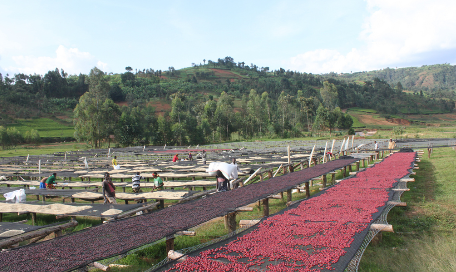

En un coup d'œil :
Le process ancestral. On sèche la cerise entière, pulpe comprise, pendant 15–30 jours. Le fruit fermente doucement au soleil, ses sucres migrent vers le grain. Résultat : explosion aromatique (fruits rouges, tropical, vineux), corps dense, acidité douce. C'est le process le plus expressif... et le plus risqué.
Comprendre : Le café dans son fruit
Pourquoi c'est le process "originel"
Avant l'invention du dépulpage mécanique (XIXᵉ siècle), tous les cafés étaient des naturals.
La logique simple :
•Cueillir les cerises mûres
•Les étaler au soleil
•Attendre qu'elles sèchent
•Décortiquer le fruit sec pour extraire le grain
Pas d'eau, pas de machines, pas de chimie — juste le soleil et le temps.
Mais cette simplicité apparente cache une complexité biologique immense : pendant 15–30 jours, des dizaines d'espèces de levures et bactéries transforment les sucres de la pulpe, créant un festival aromatique unique.
La magie de la fermentation en surface
Ce qui se passe pendant le séchage :
La cerise entière contient :
•Pulpe : 40–50% de sucres (glucose, fructose, saccharose), pectines, acides organiques
•Mucilage : 14–20 °Brix, enzymes actives
•Parche : barrière semi-perméable
•Grain : structure cellulaire avec lipides, protéines, acides chlorogéniques
Pendant 15–30 jours :
•Fermentation aérobie initiale (J1–J5) : levures oxydatives (Pichia, Candida) + bactéries lactiques démarrent sur la pulpe humide
•Fermentation mixte (J5–J15) : levures fermentaires (Saccharomyces) prennent le relais, production massive d'esters
•Migration aromatique (J10–J30) : composés volatils (esters, alcools, aldéhydes) migrent à travers le parche vers le grain
•Déshydratation : eau s'évapore progressivement (55% → 10–12%)
Le résultat : Un grain imprégné d'arômes créés par la fermentation du fruit qui l'entoure.
Natural vs autres process : Le spectre aromatique
| Process | Fermentation | Sucres disponibles | Intensité aromatique | Profil type |
|---|---|---|---|---|
| Lavé | Courte (12–36h), cuve | Mucilage seul (~5g/L) | ⭐⭐⭐ | Floral, citrus, thé |
| Honey | Modérée (10–20j), surface | Mucilage partiel (~10–20g) | ⭐⭐⭐⭐ | Miel, fruits rouges |
| Natural | Longue (15–30j), entière | Pulpe + mucilage (~50g+) | ⭐⭐⭐⭐⭐ | Fruits confiturés, tropical, vineux |
En clair : Plus de sucres + plus de temps = plus d'arômes créés.
Le Natural est le maximum absolu du potentiel fermentaire du café.
Maîtriser : Les étapes critiques
Phase 1 : Récolte ultra-sélective
Objectif : Cerises parfaitement mûres (≥20 °Brix), homogènes, sans défauts
⚠️ CRITIQUE : Le Natural amplifie tout — les qualités comme les défauts.
| Type de cerise | Impact en Natural |
|---|---|
| Mûre optimale (rouge foncé) | ✅ Fruité intense, sucrosité, complexité |
| Surmûrie (noire, molle) | ❌ Overripe, notes alcoolisées, putrides |
| Verte (dur, vert/jaune) | ❌ Végétal, astringent, sour |
| Abîmée (trouée, fendue) | ❌ Moldy, fermenté sale |
Test de maturité optimal :
•Presser doucement → la chair doit céder sans éclater
•Goûter le jus → doit être sucré (≥20 °Brix), pas acide
•Couleur uniforme rouge foncé/violacé (selon variété)
Tri initial (flottaison) :
•Immerger les cerises dans l'eau
•Éliminer tous les flottants (vides, immatures, secs)
•Garder uniquement les cerises qui coulent (densité élevée = maturité)
Tri visuel :
•Retirer manuellement toute cerise surmûrie, fendue, trouée
•Éliminer feuilles, branches, débris
•Objectif : 0 défaut (même 1% de cerises défectueuses peut ruiner un lot)
Phase 2 : Lavage préliminaire (optionnel mais recommandé)
Objectif : Réduire la charge microbienne de surface pour mieux contrôler la fermentation
Méthode :
•Rinçage rapide à l'eau propre (30–60 secondes)
•Pas de trempage (ne pas gonfler les cerises)
•Élimination poussières, terre, insectes morts
Pourquoi c'est important :
•Trop de micro-organismes indésirables (Acetobacter, Enterobacteria) → risque sour/swampy
•Un lavage léger oriente la fermentation vers des souches propres
⚠️ Débat : Certains producteurs ne lavent PAS (préservent la "flore naturelle"). C'est un choix philosophique, mais plus risqué.
Phase 3 : Mise en séchage — Le moment décisif
Support de séchage :
| Type | Avantages | Inconvénients |
|---|---|---|
| Lits africains (tables suspendues) | ✅ Circulation air optimale, pas de contact sol, hygiénique | ❌ Coût, surface limitée |
| Patios ciment/carreau | ✅ Grande surface, économique | ❌ Contact sol, chaleur excessive si pas d'ombre |
| Séchoirs tunnel | ✅ Protection pluie, contrôle T° | ❌ Coût infrastructure, moins de "soleil direct" |
| ⚠️ AU SOL | ❌ À ÉVITER : contamination terre, défauts earthy garantis | ❌ ❌ ❌ |
Épaisseur des couches :
•3–5 cm maximum (environ 2 cerises d'épaisseur)
•Plus épais → points chauds, fermentation anarchique, moldy
Exposition solaire :
•Idéal : ombre partielle (30–50% d'ombre)
•Soleil direct toute la journée → surchauffe (>45°C) → cuisson, défauts
•Trop d'ombre → séchage trop lent → moisissures
Phase 4 : Les 48 premières heures — Tout se joue ici
C'est LA phase critique du Natural.
Pendant J1–J2, la pulpe est encore très humide (55–60% d'eau), riche en sucres, et la température peut monter rapidement si mal géré.
Paramètres à surveiller :
| Variable | Plage optimale | Déviation = catastrophe |
|---|---|---|
| T° des lits | 25–35°C | >40°C → fermentation explosive (sour/overripe) |
| Humidité relative | 45–60% | >70% → moisissures ; <40% → croûte externe |
| Brassage | Toutes les 30–60 min | Insuffisant → points chauds, fermentation localisée |
| Retournement | Complet (fond → surface) | Partiel → zones mortes, moldy |
Test de température :
•Plonger la main dans le tas de cerises
•✅ Chaleur douce (sensation tiède) → OK
•❌ Chaleur forte (sensation brûlante) → DANGER, retourner immédiatement
Ce qui se passe biologiquement :
Pendant J1–J2, 3 populations microbiennes se battent pour dominer :
•Levures oxydatives (Pichia, Candida) → créent alcools légers, CO₂
•Bactéries lactiques (Lactobacillus) → créent acide lactique (douceur)
•Bactéries acétiques (Acetobacter) → créent acide acétique (vinaigre)
Objectif : Favoriser 1+2, limiter 3.
Comment ?
•Brassage fréquent → oxygène → favorise levures oxydatives
•Température contrôlée → évite explosion d'Acetobacter (aime chaleur)
•Couches minces → circulation d'air → limite anaérobiose localisée
Phase 5 : Fermentation active (J3–J10)
Une fois passé le cap des 48h, l'activité microbienne est en pleine explosion mais devient plus stable.
Humidité des cerises : 50% → 35%
Brassage : Espacer à 3–4 fois/jour
Ce qui se forme chimiquement :
| Jour | Humidité | Micro-organismes dominants | Molécules produites |
|---|---|---|---|
| 3–5 | 50–40% | Levures fermentaires (Saccharomyces) | Esters massifs (isoamyl-acétate, éthyl-butanoate) |
| 6–8 | 40–30% | Bactéries lactiques (pic) | Acide lactique, diacétyle (beurré léger) |
| 9–10 | 30–25% | Activité ralentit | Lactones (pêche, abricot) commencent |
Arômes typiques à ce stade :
•Fruité intense (banane mûre, ananas, fraise)
•Vineux doux (fermentation alcoolique)
•Légèrement lactique (crème, yaourt)
Indicateurs visuels :
•Pulpe commence à noircir (oxydation normale)
•Cerises deviennent plus légères (perte d'eau)
•Odeur : fruitée intense, légèrement alcoolisée (pas vinaigre !)
⚠️ Alerte sour : Si odeur de vinaigre piquant → Acetobacter a pris le dessus → le lot est compromis.
Phase 6 : Déshydratation avancée (J11–J20)
Humidité des cerises : 25% → 15%
Activité microbienne : Ralentit fortement (manque d'eau disponible)
Brassage : 2 fois/jour suffit
Ce qui se passe :
•Les arômes formés pendant J3–J10 migrent à travers le parche vers le grain
•La pulpe sèche forme une croûte noire/marron autour du parche
•Les esters se fixent dans la matrice lipidique du grain
Protection nocturne :
•Couvrir les lits la nuit (bâche, toile) pour éviter la rosée
•La rosée réhydrate partiellement la surface → relance moisissures
Test visuel :
•Cerises deviennent dures, cassantes
•Secouer une cerise → on entend le grain bouger à l'intérieur
•Couleur noir/marron uniforme
Phase 7 : Stabilisation finale (J21–J30)
Humidité cible : 10–12%
Objectif : Atteindre l'humidité finale sans précipiter (risque de case hardening)
Vitesse de séchage :
•Ne PAS dépasser 1,5% d'humidité perdue par jour à ce stade
•Trop rapide → croûte externe dure, cœur encore humide → fissures, défauts
Méthode :
•Réduire exposition solaire (passer en ombre partielle ou totale)
•Ou transférer en séchoir mécanique basse température (35–40°C)
Test d'humidité finale :
•Hygromètre de poche : 10–12% (précision ±0,5%)
•Test tactile : cerise dure, cassante, pas flexible
•Test auditif : secouer → grain bouge librement, son sec
•Test de morsure : mordre une cerise → doit casser net, pas plier
Indicateur a_w (activité de l'eau) : <0,60 (mesure professionnelle)
Phase 8 : Repos en cerise sèche
Durée : 4–8 semaines AVANT décorticage
Pourquoi c'est indispensable :
Contrairement au lavé où on repose en parche, le Natural repose en cerise entière.
3 phénomènes critiques pendant le repos :
•Équilibrage de l'humidité : l'eau résiduelle migre du cœur du grain vers l'extérieur
•Maturation aromatique : les esters, lactones et furaneols formés continuent d'évoluer enzymatiquement
•Fixation aromatique : les composés volatils se polymérisent dans la matrice lipidique du grain (moins de perte à la torréfaction)
Conditions de stockage :
•Sacs respirants (jute + GrainPro) ou caisses en bois
•Température stable 15–20°C
•Humidité relative 50–60%
•Empilage max 8 sacs (poids de la pulpe sèche)
Évolution aromatique pendant le repos :
| Semaine | Profil olfactif |
|---|---|
| 0 (fin séchage) | Fruité explosif, alcoolisé, volatile |
| 2–4 | Fruits mûrs, notes confiturées apparaissent |
| 6–8 | Profil "s'arrondit", notes vinées/chocolatées émergent |
Test simple : Sentir le café en cerise sèche à J+7 puis J+45. La différence est spectaculaire (plus doux, plus complexe, moins "cru").
Phase 9 : Décorticage (hulling)
Objectif : Séparer la pulpe sèche + parche de l'amande verte
Machine : Décortiqueuse (huller) spécifique pour naturals (plus puissante que pour lavés)
Difficulté : La pulpe sèche est très dure, nécessite plus de force mécanique
Contrôle post-décorticage :
•Grain vert avec une teinte légèrement plus foncée que le lavé (normal, traces de pulpe)
•Pas de parche résiduel visible
•Pas de grains cassés (>2% = réglage trop agressif)
Tri final :
•Densimétrie (table densimétrique)
•Tri colorimétrique (machine optique)
•Élimination des quakers (grains clairs, immatures)
Approfondir : Chimie et explosion aromatique
Molécules clés du Natural — Le festival des esters
Le Natural se distingue par une dominance massive d'esters + lactones, avec des niveaux 5–10× supérieurs au lavé.
| Molécule | Famille | Arôme | Seuil (ppb) | Concentration Natural vs Lavé |
|---|---|---|---|---|
| Isoamyl-acétate | Ester | Banane, bonbon | 0,5–2 | 10× supérieur |
| Éthyl-butanoate | Ester | Ananas, mangue | 1–5 | 8× supérieur |
| Éthyl-hexanoate | Ester | Pomme, fruit jaune | 1–5 | 5× supérieur |
| Furaneol | Furaneol | Fraise, caramel | 10–50 | 3× supérieur |
| γ-Decalactone | Lactone | Pêche, abricot | 5–10 | 4× supérieur |
| Sotolon | Lactone | Sirop d'érable | 0,3–1 | Présent (absent en lavé) |
| Acétate d'éthyle | Ester | Fruit fermenté | 5–20 | Variable (trace → dominant) |
| Diacétyle | Cétone | Beurre, crème | 10–50 | 2× supérieur |
Molécules uniques au Natural (quasi absentes ailleurs) :
•Sotolon → sirop d'érable, curry doux
•Éthyl-décanoate → fruit confit intense
•Acétate de phényléthyle → miel, rose
Pourquoi cette explosion aromatique ?
3 raisons chimiques :
•Quantité de substrat : 50g+ de sucres disponibles (vs 5g en lavé)
•Durée de fermentation : 15–30 jours (vs 12–36h en lavé)
•Diversité microbienne : pulpe entière = habitat pour 100+ souches de levures/bactéries
Réaction clé : Estérification
Acide + Alcool → Ester + Eau
Pendant la fermentation :
•Levures produisent des alcools (éthanol, isoamyl-alcool, phényléthanol)
•Bactéries produisent des acides (acétique, lactique, butyrique)
•Enzymes catalysent la condensation → formation d'esters
Plus de temps + plus de substrat = plus d'esters = explosion fruitée.
Profil sensoriel : Le spectre du Natural
| Attribut | Lavé | Honey | Pulped Natural | Natural |
|---|---|---|---|---|
| Intensité aromatique | ⭐⭐⭐ | ⭐⭐⭐⭐ | ⭐⭐⭐⭐ | ⭐⭐⭐⭐⭐ |
| Sucrosité | ⭐⭐ | ⭐⭐⭐⭐ | ⭐⭐⭐⭐ | ⭐⭐⭐⭐⭐ |
| Acidité | ⭐⭐⭐⭐⭐ | ⭐⭐⭐ | ⭐⭐⭐ | ⭐⭐ |
| Corps | ⭐⭐ | ⭐⭐⭐⭐ | ⭐⭐⭐⭐ | ⭐⭐⭐⭐⭐ |
| Complexité | ⭐⭐⭐⭐ | ⭐⭐⭐⭐ | ⭐⭐⭐ | ⭐⭐⭐⭐⭐ |
| Fruité | ⭐⭐ | ⭐⭐⭐⭐ | ⭐⭐⭐ | ⭐⭐⭐⭐⭐ |
| Régularité | ⭐⭐⭐⭐ | ⭐⭐⭐ | ⭐⭐⭐⭐⭐ | ⭐⭐ |
Descripteurs typiques d'un bon Natural :
•Fruité explosif : fruits rouges (fraise, cerise, framboise), fruits tropicaux (mangue, ananas, fruit de la passion)
•Vineux : vin rouge, porto, rhum doux
•Confiturés : fruits secs, compote, confiture
•Lactique : yaourt, crème, beurre léger
•Sucré : miel, caramel, sirop d'érable
•Corps : velouté, sirupeux, dense
•Acidité : douce, intégrée, malique/lactique (pas citrique)
En pratique : Roast tips pour Natural
Comportement du grain à la torréfaction
Structure cellulaire :
•Plus dense que lavé/honey (pulpe séchée intégrée dans les microfissures du parche)
•Transfert thermique plus lent (barrière aromatique)
•Libération des volatils progressive (esters piégés dans matrice)
Composition chimique :
•Sucres résiduels : très élevés (glucose, fructose, traces de saccharose)
•Esters pré-formés : concentration maximale
•Lipides : standards, mais chargés d'esters
Conséquence : Le Natural demande une torréfaction douce et progressive pour :
•Préserver les esters fragiles
•Éviter de "cuire" les sucres résiduels
•Laisser le temps au grain de libérer ses arômes
Profil recommandé (base Loring)
Charge : 190–195°C (plus basse que lavé/honey)
↓
Phase Drying (jusqu'à ~150°C)
- Durée : 5–6 min (plus longue)
- ROR cible : démarrage doux 20–24°C/min → stabilisation 15–18°C/min
- Objectif : évaporer l'eau SANS volatiliser les esters
↓
Phase Maillard (150–195°C)
- Durée : 30–35% du temps total
- ROR : maintenir 10–14°C/min, constant
- Objectif : développer la sucrosité SANS masquer le fruité
↓
Premier Crack : vers 198–202°C
↓
Développement : 10–12% (court à moyen)
- ROR : 5–7°C/min, descente très douce
- Éviter stall (≥2 min stationnaire)
↓
Drop : 200–205°C selon densité/profil recherché
Pourquoi ce profil est spécifique au Natural
| Phase | Natural | Lavé/Honey | Raison |
|---|---|---|---|
| Charge | 190–195°C | 195–200°C | Préserver esters volatils |
| Drying | Plus long (5–6 min) | Standard (4–5 min) | Structure plus dense, libération progressive |
| Maillard | 30–35% | 25–30% | Équilibrer sucrosité/fruité |
| Développement | Court (10–12%) | Moyen (12–14%) | Éviter de "cuire" le fruité |
| Drop | 200–205°C | 203–207°C | Profil plus clair pour préserver esters |
Logique générale :
Le Natural arrive en torréfaction déjà "chargé" aromatiquement. L'objectif n'est PAS de créer des arômes (Maillard), mais de les révéler sans les détruire.
Deux profils selon usage final
Profil 1 : Filtre — Explosion fruitée
Charge : 190°C
Drop : 200–202°C
Développement : 10–11%
ROR fin : 6–7°C/min (descente rapide post-1C)
Résultat : Fruité maximal, acidité malique douce, corps moyen-élevé, notes florales préservées
Idéal pour : V60, Chemex, filtre immersion (Clever, French Press)
Profil 2 : Espresso/Omni — Équilibre sucrosité
Charge : 195°C
Drop : 203–205°C
Développement : 12–13%
ROR fin : 5–6°C/min (descente douce)
Résultat : Fruité confituré, corps dense, caramel, notes chocolatées émergent
Idéal pour : Espresso, moka, omni (espresso + filtre)
Erreurs fréquentes à éviter
| Erreur | Symptôme en tasse | Correction |
|---|---|---|
| Charge trop chaude (>200°C) | Fruité brûlé, notes fermées | Baisser à 190–195°C |
| ROR trop élevé en drying | Perte des esters légers, profil plat | Modérer l'énergie initiale |
| Maillard trop long (>40%) | Fruité masqué, caramel dominant | Réduire à 30–35% |
| Développement trop long (>14%) | Fruité cuit, notes boisées/sèches | Stopper à 10–12% |
| Drop trop tardif (>208°C) | Amer, chocolat brûlé, perte totale du fruité | Drop à 200–205°C max |
| Stall en développement | Baked, profil éteint | Maintenir flux thermique constant |
Gestion du flux d'air (critique pour Natural)
Le Natural libère beaucoup de composés volatils pendant la torréfaction (esters, alcools).
Flux d'air inadéquat = 2 problèmes :
•Trop faible → volatils restent dans le tambour → réabsorption → goût "étouffé", lourd
•Trop élevé → volatils évacués trop vite → perte aromatique → profil creux
Réglage optimal (Loring) :
•Phase Drying : 50–60% ouverture damper
•Phase Maillard : 60–70% (évacuation composés + maintien chaleur)
•Développement : 70–80% (évacuation maximale des composés indésirables)
Les risques et défauts typiques du Natural
Défauts liés au process (les plus fréquents)
| Défaut | Cause | Molécules | Notes en tasse | Prévention |
|---|---|---|---|---|
| Overripe | Cerises surmûries à la récolte | Éthanol, acétate d'éthyle, acide butyrique | Alcoolisé, putride, ferment sale | Tri rigoureux, maturité homogène |
| Sour | Fermentation acétique (J1–J3) | Acide acétique, acide isovalérique | Vinaigre, piquant, fromage | Brassage intensif J1–J2, T° contrôlée |
| Moldy | Séchage trop lent, humidité >70% | Géosmine, 2-MIB, 1-Octen-3-ol | Moisi, champignon, carton humide | Couches minces, ventilation, couvrir nuit |
| Earthy | Contact avec le sol | Actinomycètes (Streptomyces) | Terre humide, betterave, poussière | Lits africains, jamais séchage au sol |
| Swampy | Fermentation anaérobie (zones compactées) | Acide butyrique, méthanethiol, DMS | Marécage, soufré, putride | Brassage fréquent, couches minces |
| Phenolic | Contamination + surchauffe | Crésols, guaiacol | Médicinal, goudron, plastique | Hygiène, T° <40°C |
Défauts liés à la torréfaction
| Défaut | Cause roast | Impact en tasse | Correction |
|---|---|---|---|
| Fruité brûlé | Charge trop chaude, ROR initial trop élevé | Confiture brûlée, notes fermées | Charge 190–195°C, ROR initial doux |
| Baked | Maillard trop long, ROR trop bas | Céréale cuite, fruité éteint | Maillard 30–35%, ROR constant |
| Woody | Développement trop long | Sec, bois, papier, fruité disparu | Drop à 200–205°C max |
| Vegetal | Sous-développement | Herbe, foin, astringent (rare en Natural) | Développer 10–12% minimum |
Conclusion : Le Natural comme expression maximale
Le Natural incarne la philosophie du "tout ou rien" :
✅ Expression aromatique maximale : aucun process ne peut rivaliser en intensité
✅ Complexité sensorielle : superposition de couches (fruité + vineux + lacté + sucré)
✅ Corps et texture : densité, velouté incomparables
✅ Authenticité : le process originel, ancestral
Mais au prix de :
❌ Risque très élevé : un seul jour de mauvaise gestion = lot perdu
❌ Variabilité : difficile d'avoir 2 lots identiques
❌ Temps long : 15–30 jours + 4–8 semaines repos
❌ Dépendance météo : pluie = catastrophe
❌ Coût infrastructure : lits africains, surfaces vastes, main d'œuvre
Positionnement idéal
Le Natural excelle dans les micro-lots premium haute spécialité (>86 points) :
✅ Mono-origines signature (Éthiopie, Kenya, Colombie expérimentale)
✅ Compétitions (profil expressif, mémorable)
✅ Filtre haute gamme (V60, Chemex, dégustation pure)
✅ Espresso fruité (signature aromatique forte)
À éviter pour :
•Production de volume (risque trop élevé)
•Blends standards (trop dominant)
•Clients cherchant "café classique" (trop déconcertant)
Natural vs Monde : Qui le fait le mieux ?
| Région | Style Natural | Caractéristique |
|---|---|---|
| Éthiopie | Référence historique | Fruité explosif (myrtille, fraise), floral, vineux |
| Brésil | Volume + douceur | Chocolat, noisette, fruit sec (moins explosif) |
| Kenya | Intensité maximale | Cassis, tomate, acidité puissante malgré natural |
| Colombie | Expérimental moderne | Tropical, ananas, mangue, très sucré |
| Yemen | Traditionnel ancestral | Épicé, vineux, complexité terreuse |
| Indonésie (Java) | Équilibre asiatique | Fruits noirs, terreux propre, corps dense |
Pour aller plus loin
Comparaison process :
•Chapitre Process → Lavé (FW) : clarté maximale, floral
•Chapitre Process → Honey : équilibre fruité/douceur
•Chapitre Process → Anaérobie : contrôle fermentaire poussé
•Chapitre Process → Macération Carbonique : influence œnologique
Défauts associés :
•Chapitre Défauts → Overripe, Sour, Moldy, Earthy, Swampy, Phenolic
Chimie aromatique :
•Chapitre Chimie → Formation des esters (estérification alcool + acide)
•Chapitre Chimie → Lactones et furaneols (caramel, fruits)
Torréfaction :
•Section Roast → Préservation des composés volatils
•Section Roast → Gestion flux d'air pour esters
💡 Note de formation : Le Natural est le process le plus exigeant techniquement mais le plus gratifiant sensoriellement. Apprendre à le reconnaître en tasse (fruité explosif, corps dense, acidité douce, notes vinées) est une compétence essentielle. Un Natural bien maîtrisé peut atteindre 90+ points SCA ; un Natural raté tombe sous 75 avec défauts éliminatoires. C'est le process où l'excellence du producteur est la plus visible : aucune marge d'erreur, chaque détail compte. Un bon Natural est une œuvre d'art ; un mauvais Natural est un désastre commercial.